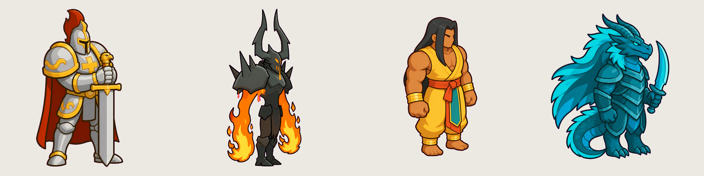
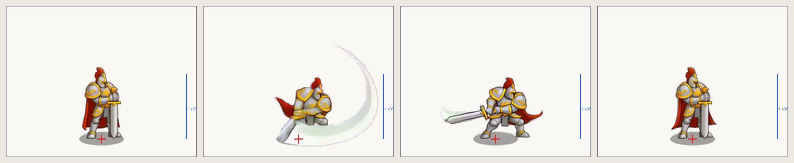
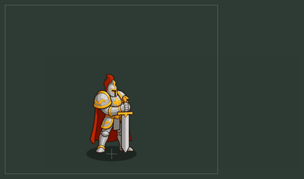
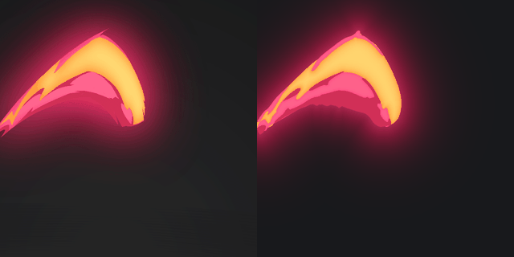
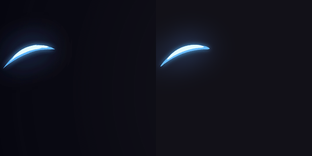
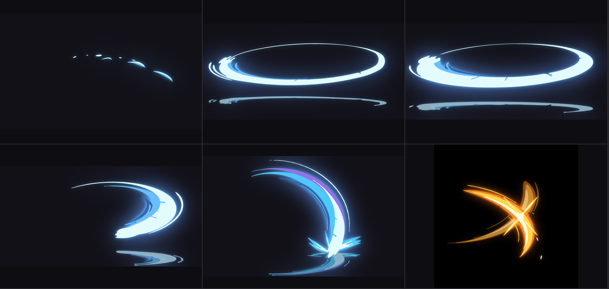
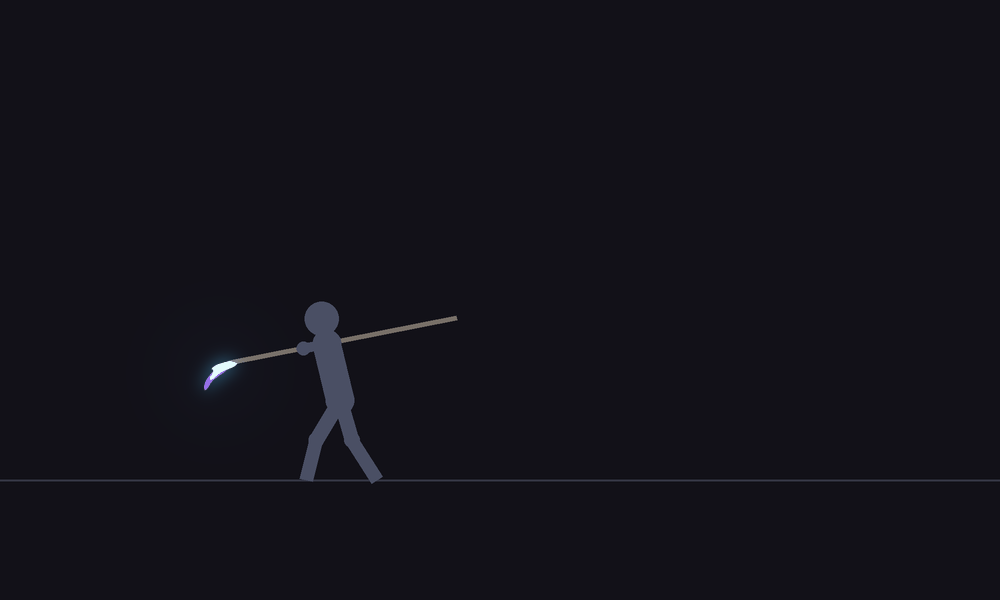
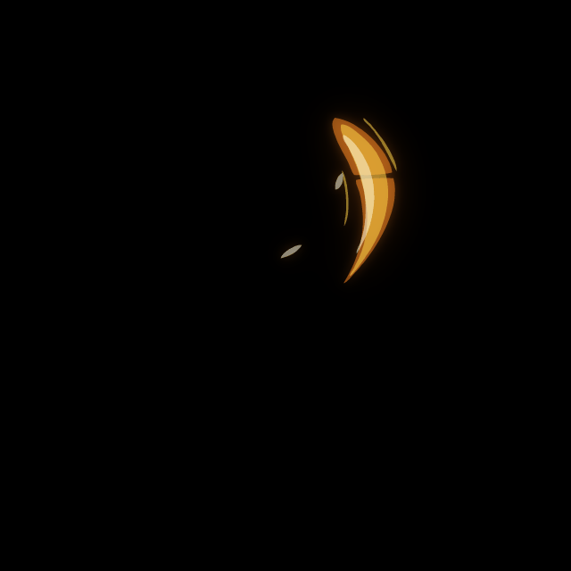

Tài liệu cho chuyên gia · dự án VFX 2D · 2026-11-10
Hiệu ứng chém (slash) cho game thủ thành 2D: chúng ta đang làm gì, làm thế nào
Tài liệu mô tả kỹ thuật và tư duy hiện tại của nhóm khi làm VFX, tập trung vào slash. Mục đích: để chuyên gia VFX xem lộ trình của chúng ta có đúng với kiến thức thiết kế hiệu ứng không và nên đi tiếp theo hướng nào.
Repo: fal-lab · thư viện hiệu ứng: lib-fx/ · bộ tool vector: lib-fx/_core/vector (v1.11)
Tóm tắt. Game là thủ thành (tower defense) 2D, camera nhìn từ trên cao. Nhân vật cao khoảng 60 px ở tỉ lệ 1x, vẽ từ một ảnh tĩnh chuẩn (master) nhìn nghiêng 3/4 quay phải. Hiệu ứng được vẽ bằng code, không dùng model AI cho hiệu ứng. Với slash, nhóm đang đi theo lộ trình: tái tạo hiệu ứng của người khác từ GIF → rút công thức có số đo → sáng tạo slash mới từ công thức → slash phức tạp hơn (combo, chữ X). Kết quả từng bước đạt 9-10/10 theo đánh giá của chủ dự án, nhưng chủ dự án thấy lộ trình này chỉ nhìn vào một yếu tố (hình và nhịp của vệt chém) trong bức tranh tổng của một hiệu ứng. Chúng tôi cần chuyên gia định hướng lại.
Thể loại: thủ thành 2D lấy cảm hứng từ một game thủ thành nổi tiếng (chúng tôi đo asset của game đó để lấy tỉ lệ, số frame, cách neo, nhưng không sao chép thiết kế).
Camera: nhìn từ trên cao, nghiêng khoảng 60°. Ánh sáng chiếu từ trên bên trái.
Cách làm asset: AI (Claude) lên kế hoạch, viết prompt, chấm kết quả; ảnh tĩnh do model ảnh vẽ (OpenAI GPT Image qua fal.ai); animation thân nhân vật do model image-to-video làm từ ảnh tĩnh rồi cắt thành sprite; hiệu ứng vẽ bằng code (Python, 0 USD), lưu riêng, không dính nhân vật.
Thư viện hiệu ứnglib-fx/: chia theo cách dùng trong game (melee/blade, impact/hit, element/fire, explosion ...). Mỗi hiệu ứng: sheet.png (một hàng frame), meta.json (fps, số frame, cỡ, điểm neo), preview.gif.
2Nhân vật: góc nhìn, tư thế, tỉ lệ
Cấu tạo nhân vật đã được định nghĩa chặt trong hai quy trình (skill) của dự án: fal-image (ảnh tĩnh) và video-sprite (animation). Hiệu ứng phải khớp với các quy ước này.
2.1 Ảnh master (ảnh chuẩn của nhân vật)
Góc nhìn "side": không phải nghiêng phẳng. Nhân vật quay mặt sang phải, thân xoay khoảng 30° về phía người xem, thấy mặt và ngực, tay và chân phía xa bị che một phần. Camera cao nhìn xuống.
Tư thế master: đứng thẳng, bình tĩnh, hai chân trên một đường sàn nằm ngang, vũ khí để nghỉ (hạ xuống hoặc dựng trước người), không nghiêng, không bước chéo. Ảnh master chính là tư thế idle.
Tỉ lệ: hoạt hình cường điệu, 2,5-4 đầu; phần thể hiện vai trò được phóng to (vai, tay, vũ khí), phần còn lại thu nhỏ để đọc được ở cỡ nhỏ.
Phong cách: vector hoạt hình, mảng màu phẳng, 2-3 tông cứng cho khối, viền dày màu tối cùng tông; không gradient, không glow mềm trong ảnh tĩnh (ánh sáng mềm làm ở bước hiệu ứng).
Hướng: anh hùng và lính phe ta chỉ có một hướng (side), quay trái là lật gương. Quái và boss có thêm trước và sau cho di chuyển; mọi trạng thái khác (tấn công, chết, skill) chỉ vẽ từ side.

Bốn master anh hùng đã duyệt (nền magenta đã tách). Cùng góc nhìn side 3/4 quay phải, đứng thẳng, hai chân trên một đường sàn, vũ khí để nghỉ.
2.2 Cỡ thân và khung hình (mọi động tác dùng chung một khung)
Chiều cao thân H là chiều cao cả bóng nhân vật khi đứng (tính cả vũ khí dựng đứng), ở tỉ lệ 1x của game. Sprite xuất ở @2x.
Bậc cỡ
H @1x (px)
Dùng cho
Khung (canvas) anh hùng @1x
XS
24
nhện con, chuột
—
S
40
lính, cung thủ, quái thường
104 × 92
M (mặc định anh hùng)
60
hiệp sĩ, võ sĩ, chiến binh
176 × 140
L
84
robot, golem, người cưỡi thú
220 × 196
XL / XXL
120 / 170
mini-boss, boss
khung boss rộng, thấp (2,55 × 1,7 H)
Điểm neo (pivot): chân nhân vật ở x = 0,5, y = 0,88 của khung. Mọi động tác của một nhân vật dùng một khung, một cỡ thân, một điểm neo; không động tác nào được to hay nhỏ hơn.
Nhịp: game chạy 30 fps, vẽ "on twos" (15 hình/giây). Tấn công khoảng 0,7 s (chạm ở 40%), skill khoảng 1,2 s (tư thế đỉnh ở 40% rồi giữ trong lúc hiệu ứng chạy), chết 0,9 s.
Thân và hiệu ứng tách rời: clip thân chỉ có nhân vật (prompt không được nhắc hiệu ứng). Hiệu ứng là các lớp riêng, đặt theo cùng điểm neo ở chân, lớp sau thân và lớp trước thân, phát cùng frame với thân.
Hiệu ứng lớn hơn khung (tia dài, cung chém dài, mưa lửa): là asset riêng trên khung riêng, game đặt lên cảnh; khung thân không bị nới.

Đòn tấn công của anh hùng cỡ M ở đúng tỉ lệ game (khung 176 × 140 @1x, phóng to 3 lần để xem). Dấu đỏ: điểm neo ở chân (0,5; 0,88). Vạch xanh: H = 60 px. Frame thứ hai có vệt chém do model video vẽ lẫn vào clip thân.

Một hiệu ứng skill đã dùng trong game (vẽ bằng Python, lớp sau và lớp trước thân, hoà màu screen), ghép với clip thân. Đây là cách gắn hiệu ứng vào nhân vật hiện nay.
3Hai cách vẽ hiệu ứng đang có
Procedural (fxcore, fx_layers)
Vector (bộ tool path Bézier)
Cách vẽ
hình cơ bản (lưỡi liềm, vòng, chớp, cột sáng, hạt), trường nhiệt cắt tầng màu, hình tự do (gai, toé, khói hoạt hình); hoặc ánh sáng mềm Python vẽ quanh thân
mỗi lớp màu là một path Bézier khép kín, mịn như vẽ bằng pen tool; nét thon hai đầu; tô chồng nhiều lớp; viền gradient mỏng; glow là bản làm nhoè của hình
Dùng cho
thư viện lib-fx/<nhóm>/<họ>/ (va chạm, xung chấn, linh hồn ...), fx gắn nhân vật (scripts/fx_layers.py, công thức JSON theo đơn vị H, neo ở chân)
tái tạo hiệu ứng vẽ tay từ GIF; sinh slash mới
Kết quả được duyệt
1 hiệu ứng nhiều lớp (xung lửa) "rất đẹp"; phần lớn còn ở trạng thái nháp
5 bản tái tạo 9-10/10; 3 slash sáng tạo 9-10/10
4Kỹ thuật tái tạo (bộ tool vector)
Đầu vào là GIF hiệu ứng vẽ tay của một designer khác. Mục tiêu: hiểu cách họ vẽ, ghi thành luật có số đo.
Đọc lớp màu: gom màu theo cụm, xác định 2-4 lớp màu phẳng, mép gradient mỏng, glow (đo từng frame), độ đục của lớp mờ. Có bộ tự động gợi ý vùng cắt, gợi ý lớp, kiểm tra mask.
Khớp nét: mỗi lớp trong một khung toạ độ hợp với hình (khung cực cho xoáy, khung thẳng cho phun từ đất, elip phối cảnh): u = vị trí dọc đường chém, v = lệch ngang. Hình được ghép từ các nét thon: độ dày W·ta·(1−t)b, cộng các lưỡi, lông vũ, vết khoét.
Làm mịn như Illustrator (Smooth & Simplify): phát hiện góc hai cấp, làm trơn độ cong, gộp đoạn, giới hạn tay nắm. Kết quả 0 điểm gãy, khoảng 26 px viền cho mỗi điểm neo.
Tô chồng: lớp dưới chạy liền dưới lớp trên khoảng 10 px (không ghép mép sát nhau, tránh khe); xuất PNG, SVG mỗi lớp một path.
Đo vòng đời: diện tích theo frame, khung bao, số mảnh, theo dõi từng mảnh qua các hình vẽ (lớn lên, tách, co, trôi, chết), frame giữ (on ones / on twos), cách mép bị ăn khi tàn.
Chấm: so từng lớp với bản gốc (IoU ≥ 0,85 lớp lớn, ≥ 0,7 lớp nhỏ), số điểm gãy, và chủ dự án chấm bằng mắt.

Tái tạo "xoáy chém lửa": trái bản gốc, phải bản dựng lại (9/10).

Tái tạo nhát chém xanh có phản chiếu dưới sàn (đạt).
Nét mịn, liền: không gãy, không vụn; tay nắm khoảng 1/3 dây cung.
Màu theo cấp bậc tạo khối: thang 2-4 tông một họ màu, bước độ sáng khoảng 45-65; tông sáng ở lõi / gốc / đầu nét, tông tối ở mép / đuôi.
Vòng đời: nhỏ → bùng (1-4 frame, mỗi hình ×1,5-×9 diện tích) → đỉnh rất ngắn → mỗi mảnh co và sứt tại chỗ (không thu cả hình về tâm) → mất khi còn đốm 8-30 px. Khung bao giữ tới 3-4 frame cuối.
Riêng slash: sinh từ một đầu nét và dài ra theo đường quét; bùng 2-3 frame; diện tích còn khoảng 0,3 mỗi frame sau đỉnh; tàn bằng vết cắt và lỗ (44-64%), không chỉ mòn mép; glow giữ sáng tới cuối trên tia và mảnh vụn (khác lửa: glow tắt trước hình).
Ánh sáng theo thời gian: glow là bản làm nhoè của hình nhân độ mạnh từng frame; lớp nóng tan trước.
5Kỹ thuật sáng tạo slash (bộ sinh)
Bộ sinh dùng lại toàn bộ cách vẽ nét của bộ tái tạo, nhưng hình được sinh từ tham số chứ không đo từ GIF. Các frame ở giữa liền mạch vì mỗi hình vẽ chỉ là một bộ tham số khác của cùng một nét.
THÂN NHÂN VẬT KHUNG TOẠ ĐỘ NGÔN NGỮ NÉT THỜI GIAN DỰNG
H, điểm chân, ─► mỗi nhát một khung ─► dải chính, dải giữa, ─► bảng mỗi hình vẽ: ─► nhiều khung, phản chiếu sàn,
vai, điểm chạm (elip phối cảnh, sợi tối, vệt tốc độ, đầu/đuôi nét, độ làm mịn, glow, độ đục từng lớp,
cung đứng, cung có đầu nét chổi khô, răng dày, giãn, đứt, ảnh nền xem thử (hình nộm)
bán kính thay đổi) khía, vụn, toé frame giữ (theo ms) → PNG / SVG / GIF / sheet
Kiểu (phong cách): bảng tham số: độ rộng lưỡi, phối cảnh (phía xa mảnh, phía gần dày), số sợi, đầu nét, răng, vụn; kiểu thường và kiểu "vũ khí lớn" (lưỡi rộng hơn, ít sợi đậm, đầu cùn, giữ 2 frame lúc lấy đà và lúc va chạm).
Vị trí theo thân: combo đặt mọi thứ theo H và điểm chân: quét ngang ở ngực ôm sát thân (tầm khoảng 1,3 H), bổ xuống chạm đất xa 1,75 H.
Hình nộm xem thử: người que cầm vũ khí dài cố định, mũi vũ khí bám đầu nhát chém, vẽ dưới hiệu ứng để xem tỉ lệ (không thuộc hiệu ứng).
Phản chiếu sàn: chính các nét đó vẽ lại trong khung lật qua sàn, dẹt còn khoảng 1/4.
Xuất cho game: frame trên nền đen (dùng hoà màu cộng), sheet.png + file meta (fps, số frame, cỡ, điểm neo).

Frame đỉnh của 6 slash sinh ra. Hàng trên: lưỡi liềm (7/10), xoay tại chỗ thường (9-10), xoay tại chỗ vũ khí lớn (9-10). Hàng dưới: chém trước mặt chữ C (9-10), combo quét ngang + bổ xuống có toé (chưa chấm), chém đôi chữ X tuần tự (chưa chấm).

Combo hai nhát xem cùng hình nộm (H = 170 px trong bản xem thử).

Chém đôi chữ X: nhát 1 trên phải → dưới trái, nhát 2 trên trái → dưới phải sau khi nhát 1 mờ còn 40%, impact ở điểm giao (550 ms).
6Tư duy và lộ trình hiện tại
Tư duy của chủ dự án (tài liệu lib-fx/MINDSET.md):
Bước 0, tái tạo hoặc tạo mẫu: dựng lại hiệu ứng tới 9-10/10 và hiểu vì sao nó đẹp; mỗi loại cần 2-3 mẫu gốc.
Phase 1, mô tả: từ kiến thức đó, chủ dự án tả bằng lời ("chém ngang xanh", "dày hơn", "vòng quanh thân"), tool sinh hiệu ứng mới.
Phase 2, biên độ: tool xuất dữ liệu chuyển động của hiệu ứng (quỹ đạo, nhịp, đường cong diện tích, từng mảnh); chủ dự án chỉnh số, tool sinh lại. Với slash, biên độ chính là đường đi của mũi vũ khí (đã thống nhất hướng, chưa làm).
Phase 3, gắn vào nhân vật: khớp với pose, quỹ đạo vũ khí và nhịp clip tấn công của một nhân vật cụ thể.
Phân biệt rõ: tái tạo (học từ art của người khác, không đưa vào game) và sáng tạo (dùng trong game).
Lộ trình slash đã đi: tái tạo 5 mẫu → rút luật → slash đơn (lưỡi liềm, xoay tại chỗ, chém trước mặt) → combo 2 nhát → chữ X.
7Chủ dự án thấy thiếu gì (và chúng tôi tự nhận)
Lộ trình trên chỉ đào sâu một yếu tố: hình và nhịp của vệt chém. Một hiệu ứng tấn công trong game còn nhiều phần khác mà chúng tôi chưa có khung kiến thức:
Phần của một đòn đánh
Hiện trạng
Báo trước / tích lực (anticipation) của hiệu ứng
chưa có chỉ có tư thế lấy đà của thân
Vệt chém (smear / trail)
đào sâu hình, lớp, nhịp, tàn
Va chạm trên mục tiêu (hit spark, hit flash, mục tiêu nháy trắng)
rời rạc có toé đất, impact chữ X; chưa có hiệu ứng trên người bị đánh
Hit-stop, rung màn hình, cảm giác lực (game feel)
chưa có
Đồng bộ với frame chạm của thân (contact frame, 40%)
thủ công đặt tay; hướng "hiệu ứng đi theo vũ khí" mới là kế hoạch
Đọc được ở cỡ thật trong game
rủi ro slash dựng ở khung 600-1000 px, nhân vật trong game cao 60 px (@1x, 120 px @2x); tia 2 px, sợi tóc sẽ biến mất khi thu nhỏ
Thứ bậc hiệu ứng (đánh thường < skill < tuyệt chiêu) và độ ồn trên màn hình nhiều đơn vị
chưa có
Ngôn ngữ hiệu ứng thống nhất cho một nhân vật / một phe / một nguyên tố
một phần bảng màu theo nguyên tố; chưa có quy tắc bộ hiệu ứng
Lớp trước / sau thân, che khuất, đổ bóng, ánh sáng hắt lên thân
một phần có quy ước lớp back / front ở fx Python
Hiệu năng (kích thước sheet, số frame, cách hoà màu)
chưa đo sheet chữ X: 16 frame × 640 px
8Câu hỏi cho chuyên gia
Với game thủ thành 2D camera cao, nhân vật 60 px, nên học VFX theo thứ tự nào cho đúng kiến thức thiết kế? Lộ trình "tái tạo → công thức → sáng tạo → phức tạp hơn" theo từng loại (slash, nổ, va chạm) có hợp lý không, hay nên học theo đòn đánh hoàn chỉnh (báo trước → vệt → va chạm → dư âm) ngay từ đầu?
Những nguyên tắc nền nào chúng tôi đang thiếu (ví dụ: thứ bậc thị giác, đọc được hình bóng, tương phản giá trị sáng, thời gian và nhịp, hướng mắt người chơi)? Nên đo hay kiểm tra chúng thế nào?
Nên thiết kế hiệu ứng ở cỡ nào: vẽ lớn rồi thu nhỏ, hay vẽ ngay ở cỡ game? Quy tắc độ dày nét tối thiểu, số lớp, số chi tiết ở 60-120 px?
Một bộ hiệu ứng cho một nhân vật (đánh thường, 2-3 skill, lên cấp, hồi sinh) nên có những quy tắc chung gì để thống nhất mà vẫn phân biệt được?
Hướng "hiệu ứng đi theo vũ khí" (lấy đường đi mũi vũ khí trong animation làm đầu vào cho vệt chém) có phải cách các studio 2D làm không? Có cạm bẫy gì?
Game feel: với hiệu ứng dạng sprite sheet, phần nào nên nằm trong sheet (flash, toé) và phần nào nên để engine làm (hit-stop, rung, nháy trắng mục tiêu)?
Việc tái tạo GIF của người khác để học: nên chọn mẫu thế nào, đo những gì, dừng ở mức nào để không tốn công vào chi tiết không chuyển giao được?
Chúng tôi nên đọc / xem tài liệu hay khoá học nào về VFX 2D cho game (đặc biệt phong cách vẽ tay, màu phẳng)?